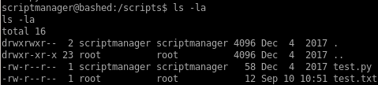

Index
test.py cron job
test.py has got to be a cron job that updates itself every minute, its also owned by root! This is our ticket in....

we notice that test.txt was updated a minutes ago!
lets see what test.py does

we see that test.txt is outputted

it has become overabundantely clear that since scriptmanager owns test.py and root runs test.py every MINUTE, we can easily hijack test.py to run a reverse shell in python to call back to our attack machine and simply wait a minute for root's cron job to execute it with root privileges back to us